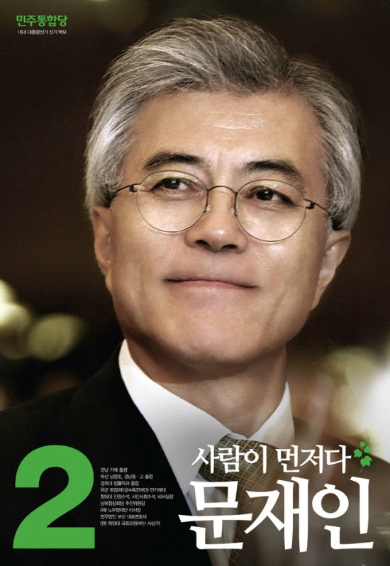

후보자 정보: 문재인 (제18대 대통령 선거)

| 소속 정당 | 민주통합당 |
|---|---|
| 생년월일 | 1953년 1월 24일 |
| 출신지 | 경상남도 거제군 |
| 학력 | 경희대학교 법학과 학사 |
| 주요 경력 |
초대 대통령비서실 민정수석비서관 제29대 대통령비서실장 제19대 국회의원(부산 사상구) 제18대 대통령 선거 민주통합당 후보 |
주요 공약 및 정책
✔ 정치 개혁: 권력구조 개편, 정당 민주화, 고위공직자비리수사처 설치 등
✔ 복지 강화: 보편적 복지 확대, 무상보육 및 무상급식 확대
✔ 경제 정책: 재벌개혁, 중소기업 지원 강화, 소득 주도 성장 기반 마련
✔ 교육 정책: 대학등록금 부담 완화, 공교육 정상화
✔ 대북 정책: 햇볕정책 계승, 남북 대화와 교류 협력 재개
✔ 복지 강화: 보편적 복지 확대, 무상보육 및 무상급식 확대
✔ 경제 정책: 재벌개혁, 중소기업 지원 강화, 소득 주도 성장 기반 마련
✔ 교육 정책: 대학등록금 부담 완화, 공교육 정상화
✔ 대북 정책: 햇볕정책 계승, 남북 대화와 교류 협력 재개
비전과 슬로건
슬로건: "사람이 먼저다"
핵심 가치: 민생 우선, 정의로운 사회, 통합과 소통의 정치
핵심 가치: 민생 우선, 정의로운 사회, 통합과 소통의 정치
논란 및 이슈
✔ 안보관 논란: 햇볕정책 계승으로 인한 안보 불안 우려 제기
✔ 정책 실현 가능성: 복지 확대에 따른 재정 부담 문제
✔ 경력 관련 비판: 참여정부 시절 국정 책임에 대한 평가
✔ 야권 단일화 관련: 안철수 후보와의 단일화 과정에서의 갈등
✔ 정책 실현 가능성: 복지 확대에 따른 재정 부담 문제
✔ 경력 관련 비판: 참여정부 시절 국정 책임에 대한 평가
✔ 야권 단일화 관련: 안철수 후보와의 단일화 과정에서의 갈등